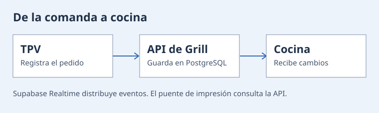

Grill Ecuador
Gestión multiempresa de restaurantes. Conecta inventario, recetas, comandas, cocina, caja y TPV en una plataforma con acceso por sucursal.
Python · Django REST Framework · React · TypeScript · PostgreSQL · Supabase Realtime
Ver arquitectura

El TPV registra la comanda en la API, que guarda el estado en PostgreSQL. Supabase Realtime distribuye cambios a la aplicación de cocina. Un puente recupera de la API los trabajos de impresión y los envía a las impresoras.
Vista simplificada a partir de Archify.